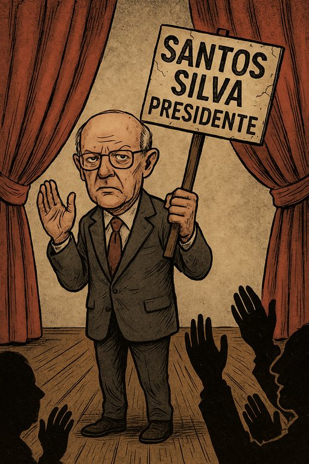

Publicado em 2025-07-03 19:08:48
Num país onde a política se faz com fotocópias gastas e líderes de cartão, eis que ressurge uma figura digna do Museu dos Horrores da Democracia Portuguesa: Augusto Santos Silva, o eterno homem de mão de José Sócrates, o professor de ironias e silêncios bem colocados, o homem que nunca se engana — mas raramente acerta.
Santos Silva anuncia agora, com pose de estadista de opereta, a sua candidatura a Presidente da República. Sim, o mesmo que foi ministro de quase tudo, o guardião das boas maneiras no Parlamento e o mestre das reprimendas parlamentares. Agora, quer ser o “pai da Nação”. Talvez da Nação da Inércia.
Esta candidatura tem tanto de grotesco como de simbólico. É o regresso dos que nunca foram, dos que habitam os corredores do poder como fantasmas com cartão dourado. Não é uma renovação: é um revival sinistro da era Sócrates, versão cerimonial, agora com mais pose e menos propósito.
Augusto Santos Silva sempre foi o homem certo para manter o status quo: eloquente, mas inofensivo; académico, mas obediente; pensador... mas só em privado. Um sobrevivente de todos os governos, uma múmia politicamente embalsamada, agora com ambições de Belém.
“Se a esquerda morreu de ideias, Augusto vem tratar do velório — de gravata solene e sorriso cínico.”
— Crónica Veritas
Talvez, no fundo, ele esteja a prestar um último serviço ao país: mostrar que a Presidência da República, em Portugal, é cada vez mais um cargo decorativo onde o cinzentismo político pode prosperar como musgo em pedra húmida.
Portugal precisava de um sobressalto. Em vez disso, teve um bocejo vindo do fundo do aparelho partidário. Que esta ironia final seja também o epitáfio de uma era de mediocridade impune — agora emoldurada em faixa presidencial.
Autor : Augustus Veritas o cronista do inverosímil luso
Augusto Santos Silva é, na verdade, um adventista das múltiplas verdades.
Um crente fervoroso de que todas as verdades são úteis… desde que bem posicionadas.
Hoje invoca a moral da República, ontem silenciava os escândalos do camarada Sócrates,
amanhã, talvez proclame que tudo foi um mal-entendido semântico.Domina com mestria a liturgia do “parece que disse, mas não disse”,
celebrando o dogma pós-moderno de que a verdade é negociável —
especialmente se houver eleições à vista e um microfone por perto.